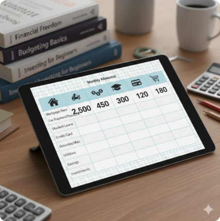

Budgeting skills and saving money are often overlooked when families prepare their children for life outside the home. As a result, many young adults learn financial responsibility through trial and error.
Spending Smart in a Fast-Fashion Economy
In an age where impulsive spending and online gambling are increasingly prevalent on platforms such as DraftKings, Polymarket, and TikTok, financial literacy has become more important than ever. Developing strong budgeting skills enables individuals to make informed decisions, resist unnecessary purchases, and prioritize spending on goals and necessities that provide lasting value.

The Role of Taxes in Personal Budgeting
Tariffs, taxes, and inflation influence everyday financial decisions. Learning how to budget can significantly reduce stress and uncertainty. A lack of financial awareness can strain relationships and create long-term instability. By understanding their spending habits, individuals can "identify patterns, take corrective action, and plan for the future"[1]
Planning for Long-Term Stability
Preparing financially for life after high school or college allows young adults to build a safety net, manage student loan repayment, and avoid costly mistakes such as overdraft fees or missed payments. Ultimately, budgeting promotes financial stability and long-term security.
How can you help?
Financial literacy is the ultimate tool for independence, yet many young people enter adulthood without a map. By sharing these resources, you aren't just passing on "money tips" —you are helping someone avoid the crushing weight of debt and gain the confidence to navigate an increasingly complex economy. When we understand how money works, we gain the power to build a life of choice rather than one of restriction. Help us bridge the knowledge gap by sharing this info with your community; a single conversation today can prevent a lifetime of financial stress for a young person tomorrow.
Resources: